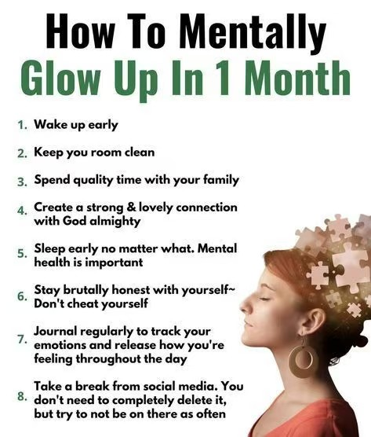

Get three daily wins: physical, mental, and spiritual.
Follow the 8+8+8 rule for a balanced day.

Steps to mentally glow up in one month.
Keep a healthy mind by practicing mindful habits.

Simple actions to boost your mood.
Replace negative habits with positive ones for a better lifestyle.
Tips on how to finish everything you start.
Become a top 1% man by 2024 with these habits.
Four pillars of life to maintain balance and success.